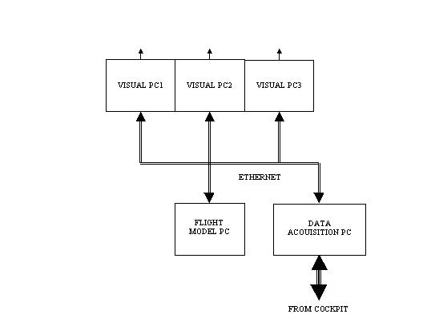
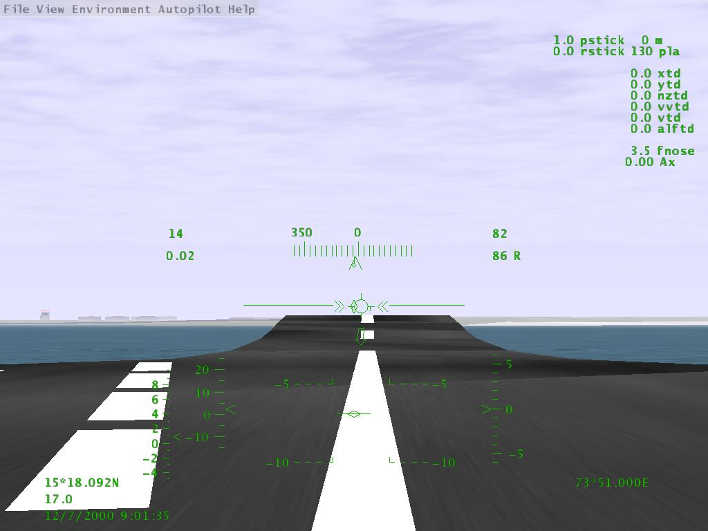
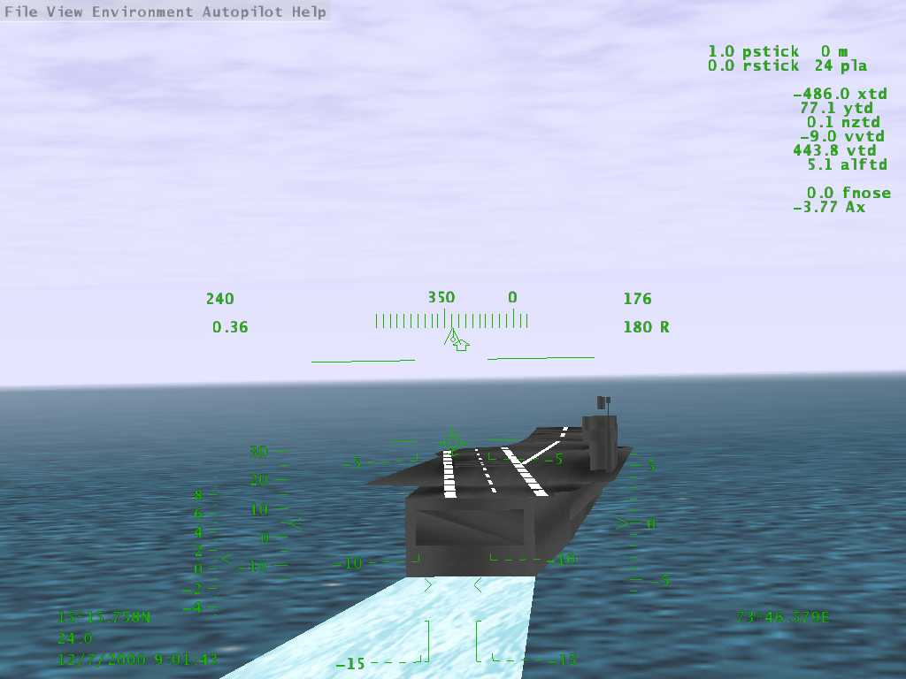
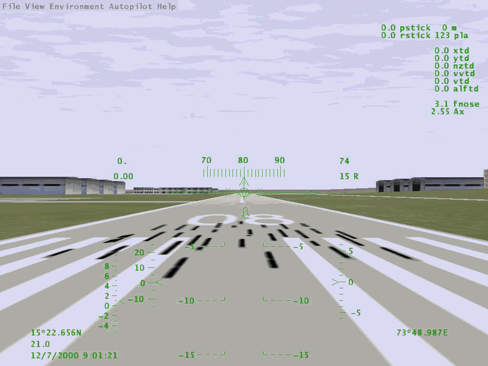
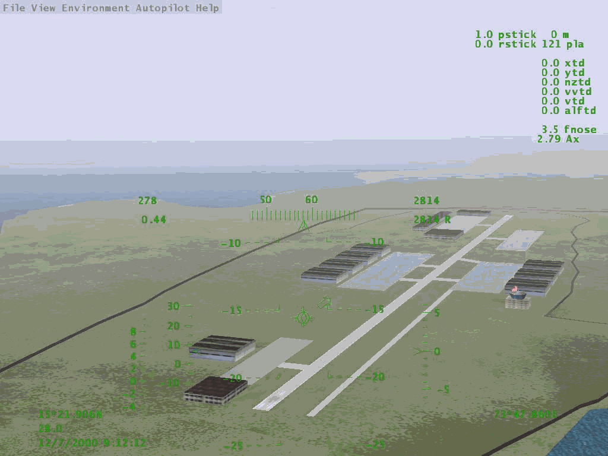

PCs IN FLIGHT SIMULATION RESEARCH – THE LCA (NAVY) EXPERIENCE
Commander VS Renganathan
Aeronautical Development Agency
Vimanapura, Bangalore – 560 017
Abstract
Light Combat Aircraft (LCA) programme has so far effectively used high-end image generators for research, development and qualification work on handling qualities. The flight simulation requirement for naval variant of LCA presented an opportunity to reassess the fidelity requirement of each and every component of the simulator considering technological advancements in PC hardware and graphics accelerators. The pressing need to innovate solutions which remain unaffected by import barriers whilst offering unlimited scope for upgradation led to configuring LCA(Navy) simulator around PCs with graphics accelerator cards and an OpenSource image generator software FlightGear <www.flightgear.org> suitably modified to suit our requirements. This paper discusses the price/performance advantage of PC based part-task simulator based on our experience on ski-jump launch and recovery simulation of LCA (Navy). This simulator has been successful in providing realistic simulation of carrier-based launch and recovery for the evaluation and refinement of flight control law. Essential visual simulation features are identified and their importance towards achieving visual fidelity are discussed
Introduction
Light Combat Aircraft (LCA) programme has relied so far, on high-end image generators for pilot-in-loop real-time simulation for handling qualities research, development and qualification of the control law besides providing a realistic cockpit environment for pilot-vehicle interface (PVI) development. These machines continue to provide the performance that matches their cost and are being utilized continuously and effectively.
Studies on Naval variant of LCA brought in the need for a simulation platform to evaluate the ski-jump launch and arrested recovery phases on an aircraft carrier. The objectives of the simulation were to evolve the launch mode and associated HUD symbology and to thoroughly evaluate the safety and performance of the aircraft in the ski-jump launch and recovery phases. The high-end machines could not be deployed for this purpose because of pressing requirements of ongoing LCA simulation studies. A need therefore arose to configure afresh a suitable platform for LCA (Navy) flight simulation and this provided an opportunity to address the flight simulation requirements abinitio, right from scratch, taking all factors into account. Needless to say that the solutions that unfolded were a result of astounding advances made in the field of 3D graphics accelerator technology coupled with the need to find solutions that are low-cost and immune to import barriers.
PC based solutions are attractive in terms of price/performance and non-susceptibility to import barriers, besides offering unlimited scope for upgradation. The first obstacle was to move from the mindset sceptical of low-cost solutions and to accept that high-cost technology is not a pre-requisite to meet the requirements. It was decided to concentrate on performance and realization of objective, which was, to make a flight simulator for naval version of LCA that can take-off, land and fly from an aircraft carrier. Our approach was to explore the use of commercial off-the-shelf products.
The components
The efficiency and compatibility requirements of two major components of software influenced the choice of hardware in no small measure as is explained later.
The major software components of LCA (Navy) simulator are:
The major hardware components of LCA (Navy) simulator are, as shown in Fig. 1:
Software
Flight Dynamics model : The FDM is an in-house software developed as part of the main aircraft program and suitably modified with additional mathematical models of 6-DOF aircraft carrier dynamics, wind-over-deck (WOD), arrester gear, ski-jump geometry and additional aerodynamic surfaces of the Naval variant. Considering the requirement and the realism sought, each and every component of the FDM was chosen with adequate details, commensurate with the simulation tasks. The following components are used for the simulation:
|
Sl. No |
Subsystem |
Fidelity |
|
1. |
Math Model |
6-DOF, Gust, Turbulence, Wind over Deck, Ship Motion |
|
2. |
Controls |
Complete Duplicate of Aircraft Controls and Switches |
|
3. |
Cockpit |
Actual Cockpit, HUD primary display (Overlaid on OWI) |
|
4. |
Ground Handling |
Comprehensive including Arrester Gear Forces |
|
5. |
Visual |
3 Window,135° Horizontal, 4:3 aspect, 1024x768, day/night |
|
6. |
Latency |
Real-Time |
|
7. |
Motion |
None |
|
8. |
Audio |
None |
|
9. |
Mission Eqpt. |
None |
Image Generator software: The choice of PCs for Image Generation was compounded by the requirement to find suitable rendering and scenery creation software. In today’s market scenario software is much higher priced than the cost of matching PC hardware. Accepting the challenge of keeping the simulation cost low whilst meeting all the requirements, a search for an affordable software solution led us to an exciting project ‘FlightGear’ at www.flightgear.org. This open source project helped us decisively steer towards using PCs for flight simulation.
FlightGear code is built around PLib another open source project, which provides scenegraph library functions. Together, they provide features that are essential for flight simulation. FlightGear software, as of early 2001, has the following features desirable for this part task simulator:
Hardware
For the ski-jump launch, flying and landing tasks, environmental cue fidelity is most important to elicit realistic pilot behavior. It is also known that no simulator evaluation can completely duplicate the experience in the real world. With these lower and upper bounds of the flight simulation task and also given that highest possible fidelity was available as far the flight model, cockpit and controls are concerned, we carried out a feature-wise comparison of PC based and high-end simulators (Ref. 1) in order to identify those features that could affect pilot behavior in the simulator. The most relevant features to this part task simulator are:
a) Anti-aliasing : Aliasing artefacts are known to affect perception of depth in the scene. Pilot opinion on whether they present any negative cues was found to be subjective. While high-end machines provide upto 64 subpixel anti-aliasing, their gain over the 4 subpixel full-screen anti-aliasing (FSAA) provided by recent cards is not of proportianate order. FSAA alongwith careful design and use of textures and polygons in the scene could rule in favour of PCs for part task simulators.
b) Edge blending : Until this feature is available in graphics accelerator cards, this function could be carried out by projectors.
c) Genlock : Trials with 3 PCs one driving each window while receiving eye-point information through the Ethernet using non-blocking UDP sockets does not cause any distracting visual anomalies, atleast at the 45-60 Hz update rates tested so far. It is necessary to carefully design the visual database such that the processor or graphics pipeline does not choke on polygon rate or pixel fillrate in any view/position.
d) Constant frame rate and load metric feedback : Careful design of the visual database such that scene load on any window does not get overloaded due to processor limitation or fill-rate limitation, helps alleviate this problem. This does not translate to sacrificing realism.
It was found that the above compromise/work around would not affect realism to the extent of modifying pilot behavior and suggests that we may not need great sophistication for specific tasks.
Having accepted the suitability of PCs for use in image generation, the choice of their configuration and graphics cards were based on the software. Although FlightGear is presently single-thread code, it is planned to convert it into multiple threads in order to separate the scenery paging and rendering functions. Dual processor machines under Windows NT/2000 were chosen with this in mind. Similarly the requirement to run the FDM real-time also led to the use of dual processor machines, so that the FDM runs unhindered on the second processor with the first taking care of routine kernel operations. Experience has shown that steady 12.5 msec loops are possible on these machines without Real-Time Operating System (RTOS).
Different graphics hardware have been tested in the past two years based on various chipsets. Realistic rendering of visuals at around 4000 polygons per frame at 1024x768 pixel resolution and 32 bit colour depth at 60 Hz requires high pixel fill-rates. The choice, therefore, has been in favor of cards with high pixel fill rates. High-end cards with more OpenGL functions implemented in hardware and designed specifically for visual content creation were found to perform quite similar to high pixel-fillrate gaming cards, on this application.
Results
The fully operational FlightGear-PC combination has been put to test at the Aeronautical Development Agency with Naval pilots while evaluating the ski-jump launch, approach and recovery on an aircraft carrier. The evaluation has proved beyond doubt that PC based simulation is here to stay. The platform was also used extensively by in-house pilots to evolve HUD symbology specific for the ski-jump launch mode leading to the final clearance of concept by the Naval pilots. The non-availability of night launch and recovery capability was the only drawback of the PC based simulator, which is expected to be overcome shortly. Snapshots of a few frames during launch/approach on land and sea are shown in Figs. 2 to 5. The following configuration has been tested and is being used effectively :
Conclusion
Configuring a part-task research flight simulator around commercial off-the-shelf PCs is now possible due to the rapid advancements in PC and graphics accelerator technology. These configurations could be further simplified to provide low-cost classroom aids/tools for universities engaged in flight simulation research. Although these low-cost systems are not expected to replace high-end systems in all spheres of application, they could certainly replace them in specific applications, especially in research areas, with a scope for limitless upgrade based on the growth potential of 3D graphics accelerator cards. PC based systems provide the best price/performance along with image quality and frame rates that were once exclusive to high-end machines. Our experience shows that three PCs alongwith the FlightGear code could give us around 70 percent of the high-end, million dollar machines’ capabilities at almost 1/70th the cost.
References
Figure 1.
To projectors



